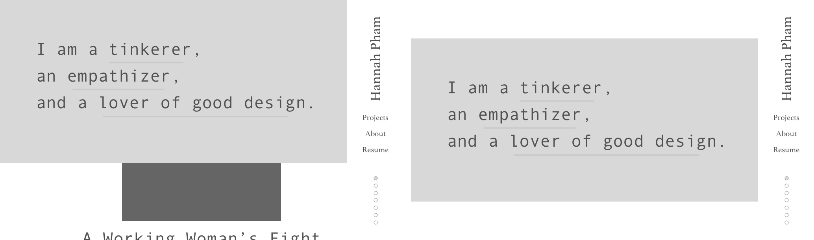
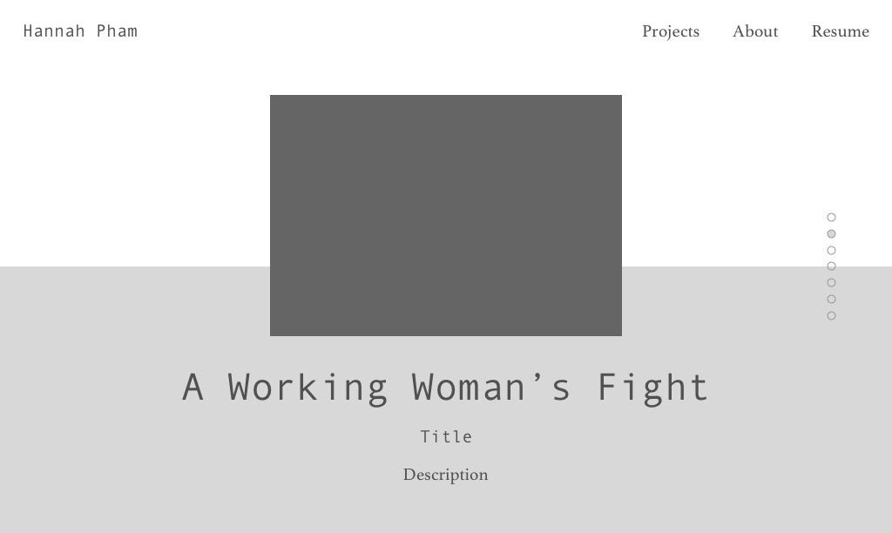
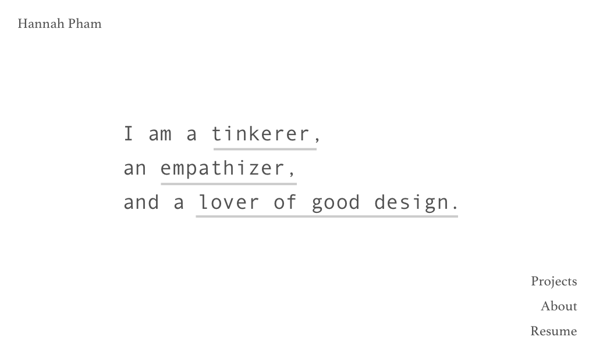

Designer
Developer
Visual Design
Wireframing
HTML/CSS
JQuery
Sketch
Github
Website
As a designer, I wanted to challenge myself to design and build an online portfolio to present my work. Tapping into my short-lived dream of becoming a developer, I decided to build this website from scratch.
I started off with a bare-bones Bootstrap template to help with responsive page padding and text alignment.
The first drafts included a side navigation bar that would be fixed on the website as users scrolled down the page. I also decided against using strong colors.
To make the website more interactive, I attempted to design the project snippets with scroll snap points, but recognized that scroll snapping was not universally compatible with all browsers. I also wanted to show a sneak peek of my projects by hiding the first project under the landing page header, but that proved to be later complicated.
I decided to omit the side navigation bar because it became distracting on the project snippet pages. Eventually, I removed the navigation bar (on desktop) altogether to stay consistent with the simplicity of the landing page.
The resulting online portfolio is simple, and directs the user’s focus to the projects. The landing page has hidden Easter eggs that are revealed when users hover over a few of the words. I built the website with HTML, CSS, and JQuery (and a lot of Google searches!).